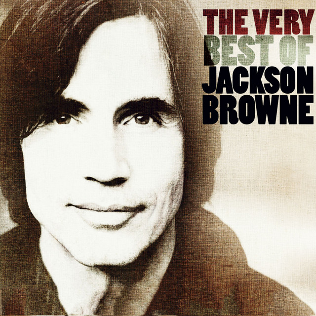
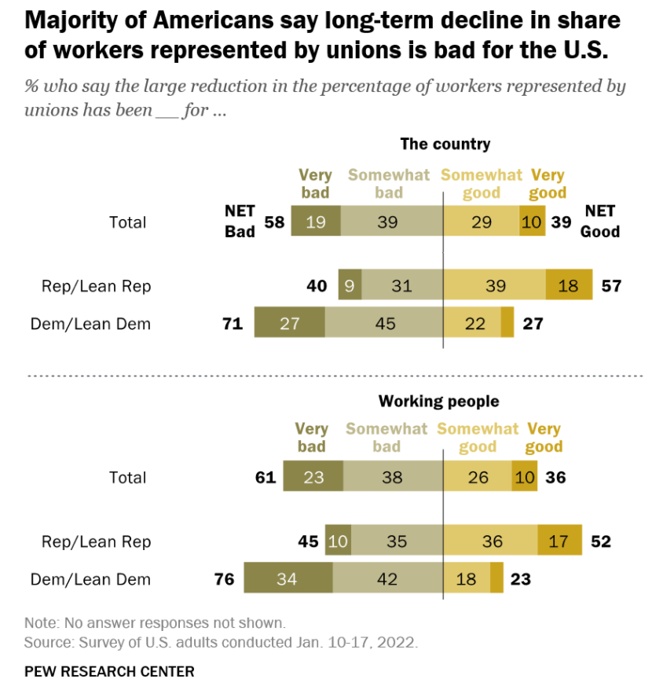

가사에 왜 노조가 나와? - The Load-out + Stay 가사 해설
게시: 2022-06-23T06:30:47+09:00
오늘 소개해드릴 노래는 원래 작사작곡가였다가 직접 노래도 했던 70년대 가수 Jackson Browne의 노래 The Load-Out입니다. 이 노래는 잭슨 브라운이 직접 연주하는 감미로운 피아노 연주와 함께 시작되는데, 처음 듣는 분들도 다들 좋아할 수 밖에 없는 서정적인 발라드입니다. 가사 내용은 의외로 단순합니다. 그냥 순회 공연을 하는 밴드 생활의 이모저모에 대해 넋두리하듯 이야기하는 내용이에요. 그런데 멜로디도 그렇고 가사도 그렇고, 이 The Load-out의 끝 부분은 Stay라고 하는 별도의 노래의 시작 부분과 딱 연결이 됩니다. 실제로 많은 공연에서 잭슨 브라운은 The Load-out (상차, 상하차 할 때의 그 상차 맞습니다)에 붙여서 Stay (더 있어요)를 함께 노래했습니다.

1977년 발표된 이 노래 가사에서, 눈에 띄는 부분이 있습니다. 공연이 끝난 뒤 악기나 음향 기기 등의 짐을 포장해서 트럭에 싣는 상하차 인부(roadies)들이 최저임금을 받으면서도 열심히 일해주는 것에 대해 고마움을 표시하기도 하고, 저 뒤쪽에서는 노조(union)도 신경 안 쓰니까 그냥 더 노래해도 된다고 하기도 하지요. 원래 계획된 공연이 끝났는데, 관중들이 앵콜을 요구하는 경우가 많지요. 그런데 적어도 잭슨 브라운은 본인도 더 노래하고 싶은 경우가 많았나 봐요. 하지만 그게 꼭 가수 마음대로 내키면 하는 것은 아닌가 봅니다. 공연 프로모터의 눈치를 보는 것은 그럴 수 있다고 보는데, 상하차 인부들, 즉 roady들의 노동조합의 눈치도 봐야 하나 봅니다. 생각해보면 당연한 것이, 공연 시간이 30분 더 늘어지면 공연 후에 짐 포장하러 대기 중인 인부들의 대기 시간도 더 길어지니까요. 최저임금 받는 노동자들이 공연의 주체이자 사실상의 고용주인 유명 가수의 눈치를 봐야지, 오히려 가수가 노동자들의 눈치를 본다는 것인데, 이게 자연스러운 일일까요? 당연한 일입니다. 자본주의는 계약에 의한 거래가 경제활동의 기본이고, 계약의 주체들은 주인과 노예 관계가 아니라 서로 동등한 관계인 것이 기본입니다. 따라서 노동 계약은 몇시부터 몇시까지 어디서 일을 한다는 것이어야지 그냥 고용주 기분 내키는 대로 무엇이든 시키는 대로 한다는 것은 자본주의적 계약이 아닙니다. 상대가 유명 락 가수이건 재벌이건 계약은 계약대로 지켜야 하는 것이 당연한 것입니다. 하지만 그건 자본주의 교과서에나 나오는 이야기일 뿐 실제로는 당연히 그렇지 않고 일개 노동자와 유명 가수의 관계는 동등하지 않습니다. 그러나 유명 가수가 인부들의 눈치를 볼 수 밖에 없는 것은 바로 노동조합의 힘 덕분입니다. 아마 저 70년대에는 미국에서도 노동조합이 꽤 힘이 있어서 단순 노동직이자 비정규직일 것 같은 상하차 인부들의 노동조합도 있었나 봅니다. (지금도 있는지 모르겠네요.) 그래서 '프로모터도 괜찮다고 하고 노조도 괜찮다고 하니 더 놀아보자' 라는 가사가 나온 것이지요. 혹시 이 가사는 노조의 등쌀에 시달리던 잭슨 브라운이 노조를 비아냥거리기 위해서 쓴 가사일까요? 당연히 그렇지 않습니다. 잭슨 브라운은 80년대 미국의 중남미 독재정권 비호 등에 대해 반대하는 활동을 한, 소위 진보 정치 활동도 한 가수거든요. 그리고 노조의 힘이 커지는 것을 반대하는 사람이라면 노조라는 존재 자체를 들먹이는 것을 싫어합니다. 노조라는 것이 존재하고, 또 노조가 있다면 원래 저렇게 할 수 있는 거구나 라는 것을 힘 없는 노동자들이 깨닫는 것 자체가 우익들에게는 재앙이거든요. 최근 어떤 조사에 따르면 미국인들의 60% 정도는 노조의 약화가 국가를 위해서나 국민들을 위해서나 안 좋은 일이라고 생각한다고 합니다. 그런데도 이제 미국은 노조의 힘이 매우 약해진 상태입니다. 1980년대 초에는 미국 전체 근로자의 20%가 노동조합 소속이었으나, 2022년 조사에 따르면 이젠 고작 10%만이 노동조합 소속입니다. 이는 아직도 노조의 힘이 막강한 유럽 사회와는 매우 다른 현상입니다. 스칸디나비아 국가들의 경우는 약 65%가 노동조합 소속이고, 아이슬란드는 92%에 달할 정도입니다. 노조 가입률이 10% 정도에 불과한 프랑스도, 실제로는 거의 100%의 노동자들이 단체교섭 (collective bargaining agreement)에 의한 보호를 받습니다. 그런데 선진국 중에서는 대체 미국에서만 노조의 힘이 약화되었을까요?

한 연구 결과를 요약하면, 세계화, 미국 정치, 그리고 미국인들의 인종 심리 때문이라고 합니다. 먼저 70년대 들어서 석유 위기 등 여러 요인이 겹치면서 인플레가 생겼고, 그로 인해 미국 국채 금리가 급등했으며, 결국 달러 가치의 상승으로 인해 미국 제조업의 몰락과 해외 이전이 시작된 것이 직접적인 원인이라고 합니다. 아무래도 노조는 제조업 근로자들이 주축이 되는 경우가 많은데, 제조업이 해외로 이전하거나 몰락하면서 제조업 노동자 자체가 줄어들었으니 어찌 보면 노조의 몰락은 당연한 결과일 수도 있습니다. 게다가 WW2 직후부터 시작된 공산주의에 대한 경계심, 그리고 그에 따른 각종 노조 탄압 법안의 발의 등도 노조의 영향력을 깎아먹은 주요 원인이었고요. 독일만 하더라도 일종의 연합노조인 DGB 위원장이 메르켈 총리와 직접 대화하는 것이 전혀 이상하지 않을 정도로 노조의 권한이 막강하고, 또 정당들도 노조를 적대시하지 않는 분위기입니다. 그러나 미국 정치에서는 특히 공화당이 노조를 적대시하는 것이 뚜렷하지요. 미국도 우리나라처럼 민주당보다는 더 보수적인 공화당이 자주 집권하니까 노조를 적대시하는 분위기가 꽤 많다고 합니다. 냉전 기간 중에는 더욱 심했고요.
(왼쪽 분은 DGB 위원장인 Reiner Hoffmann이고 오른쪽 Lady in Red는 다들 아시는 메르켈 총리입니다.)

미국에서 노조가 몰락하게 된 결정적인 계기는 아직 노동조합이 뿌리 내리지 못한 남부의 섬유 공업 지대의 노조 결성을 지원하는 "Operation Dixie" (남부 대작전)의 실패라고 합니다. "Operation Dixie"의 실패 원인은 여러가지가 있겠으나, 진보적인 노조 지도부는 차마 흑인 노동자를 차별하지 못했는데 반해, 노조 결성을 저지하는 측에서는 '흑인들을 상전으로 모시게 된다'라는 대규모 선전전을 펼치는 바람에 결국 남부의 백인 노동자들이 노조에 대해 반감을 가지게 되었다고 하네요. 정치적인 내용은 씁쓸하지만, 음악 자체는 매우 좋습니다. 이 유튜브 링크에서 감상하세요 https://youtu.be/Fz6nETd6jZw The Load Out & Stay - Jackson Browne (1978 라이브) Now the seats are all empty Let the roadies take the stage Pack it up and tear it down 이제 관중석이 다 비었네요 인부들이 무대를 차지할 차례에요 뜯어내고 포장하고요 They're the first to come and last to leave Working for that minimum wage They'll set it up in another town 저들은 맨 처음 와서 맨 나중에 가요 그 최저임금을 받으면서 말이에요 다른 도시에 가서 또 무대를 세우지요 Tonight the people were so fine They waited there in line And when they got up on their feet they made the show 오늘 밤 관중들은 정말 멋졌어요 줄서서 기다리다 들어와서는 벌떡 일어나 정말 멋진 무대를 연출했지요 And that was sweet-- But I can hear the sound Of slamming doors and folding chairs And that's a sound they'll never know 참 고마운 일이었어요 하지만 내가 지금 듣는 이런 소리, 쾅 닫히는 문짝들과 접이식 의자 소리는 관중들은 들을 일이 없을 거에요 Now roll them cases out and lift them amps Haul them trusses down and get'em up them ramps 'Cause when it comes to moving me You guys are the champs 케이스들을 펼쳐놓고 앰프를 들어올리고 구조물을 해체하고 경사로에 올려놓고 저를 옮기는 문제에 있어서는 여러분이 최고거든요 But when that last guitar's been packed away You know that I still want to play So just make sure you got it all set to go Before you come for my piano 하지만 마지막 기타까지 다 포장한 뒤라도 내가 아직도 연주하고 싶은 거 다들 아시죠 그러니 출발 준비 다 끝낸 뒤에야 내 피아노 챙기러 오세요 But the band's on the bus And they're waiting to go We've got to drive all night and do a show in Chicago 하지만 밴드가 다 버스에 탔고 출발을 기다리고 있네요 밤새 길을 달려 시카고에서 공연을 해야 해요 or Detroit, I don't know We do so many shows in a row And these towns all look the same 아니 디트로이트던가, 모르겠네요 연달아 하는 공연이 진짜 많거든요 도시들이 다 비슷해 보여요 We just pass the time in our hotel rooms And wander 'round backstage Till those lights come up and we hear that crowd And we remember why we came 우린 그냥 호텔방에서 시간을 보내거나 무대 뒤편에서 서성거려요 그러다 조명이 켜지고 관중 소리가 들리면 여기 왜 왔는지 생각이 나요 Now we got country and western on the bus R and B, we got disco in eight tracks and cassettes in stereo We've got rural scenes & magazines We've got truckers on the CB We've got Richard Pryor on the video 버스에는 컨트리 뮤직과 웨스턴 뮤직 R&B도 있고요, 8트랙과 카셋 스테레오에 디스코도 있어요 시골 경치와 잡지도 있지요 민간 주파수(Citizen Band)에서는 트럭 기사들이 떠들어요 비디오에는 라처드 프라이어 (유명 흑인 코미디언)가 나오네요 We got time to think of the ones we love While the miles roll away But the only time that seems too short Is the time that we get to play 사랑하는 사람들을 떠올릴 시간도 있어요 그러는 동안 여행은 계속 되지요 하지만 진짜 시간이 빨리 간다고 느끼는 것은 우리가 공연을 할 때에요 People you've got the power over what we do You can sit there and wait Or you can pull us through Come along, sing the song 여러분들에겐 우리를 좌지우지할 힘이 있어요 그냥 앉아서 기다리셔도 되지만 우리를 끌고 가도 된답니다 일어나요, 함께 노래를 불러요 You know you can't go wrong 'Cause when that morning sun comes beating down You're going to wake up in your town But we'll be scheduled to appear A thousand miles away from here 여러분의 선택이 잘못될 리가 없다는 거 아실 거에요 왜냐하면 아침 햇살이 쏟아져 내릴 때 여러분은 이 도시에서 잠이 깨겠지만 우리는 또 스케쥴에 따라 천리 밖에서 또 공연을 하니까요 (여기서부터는 Stay) People, stay just a little bit longer We want to play--just a little bit longer 여러분, 조금만 더 있어요 조금만 더 노래하고 싶어요 Now the promoter don't mind And the union don't mind 프로모터도 괜찮다고 하고 노조도 괜찮다니까 We can take a little time and we'll leave this all behind Singin' one more song 시간 조금만 더 써서 모든 걸 뒤로 하고 한 곡만 더해요 Oh won't you stay just a little bit longer Please, please, please say you will Say you will 아 제발 조금만 더 있어요 제발 제발 제발요 그러자고 해요 그러자고 해요 Oh won't you stay just a little bit longer Oh please, please stay just a little bit more 아 제발 조금만 더 있어요 오 제발요, 조금만 더 있어요 Now the promoter don't mind And the roadies don't mind 프로모터도 괜찮다고 하고 인부들도 괜찮다니까 We can take a little time and we'll leave it all behind Singin' one more song 시간 조금만 더 써서 모든 걸 뒤로 하고 한 곡만 더해요
Source : https://en.wikipedia.org/wiki/Jackson_Browne
https://psmag.com/economics/what-caused-the-decline-of-unions-in-america https://www.pewresearch.org/fact-tank/2022/02/18/majorities-of-adults-see-decline-of-union-membership-as-bad-for-the-u-s-and-working-people/